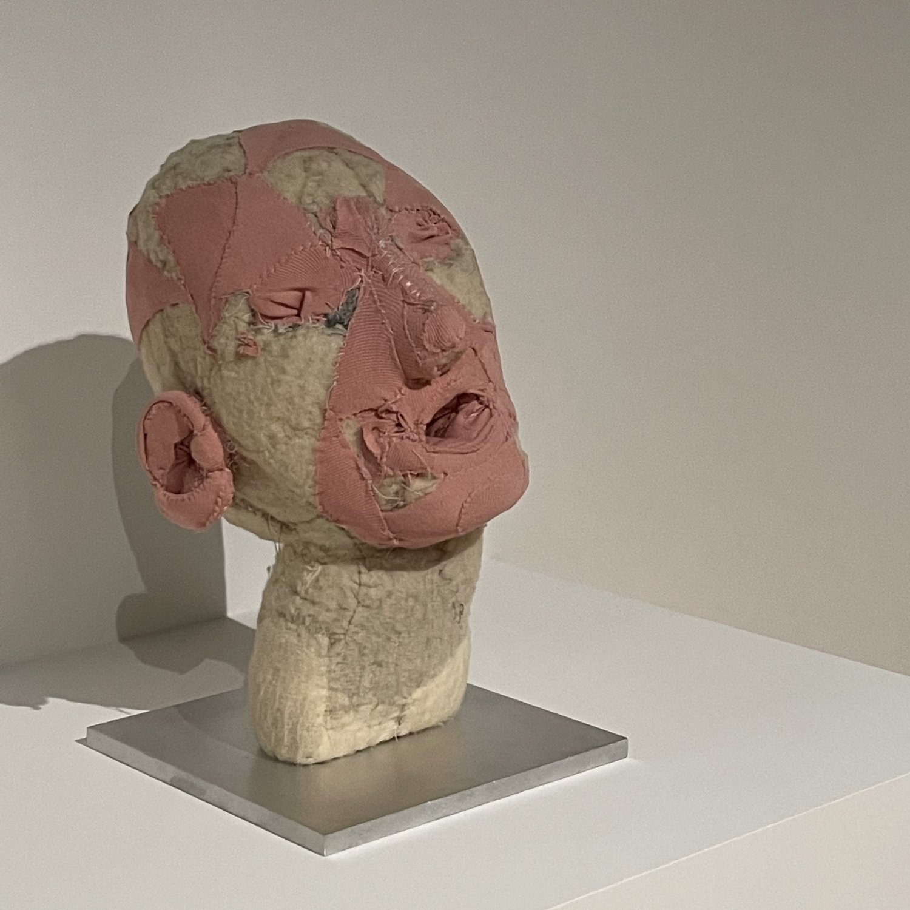
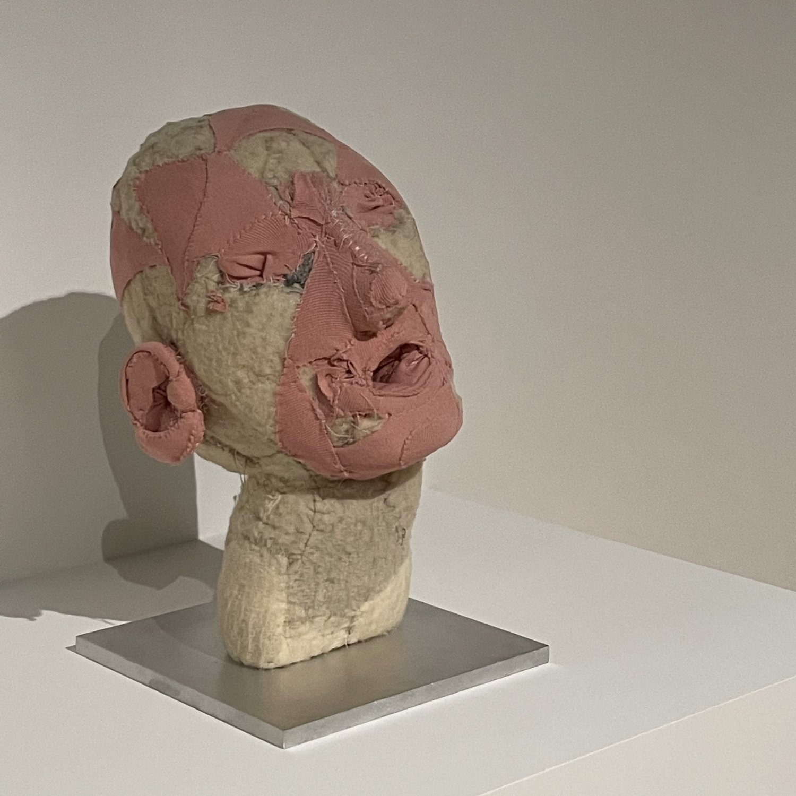

About
Louise Joséphine Bourgeois; (25 December 1911 – 31 May 2010) was a French-American artist.
Although she is best known for her large-scale sculpture and installation art, Bourgeois was also a prolific painter and printmaker. She explored a variety of themes over the course of her long career including domesticity and the family, sexuality and the body, as well as death and the unconscious. These themes connect to events from her childhood which she considered to be a therapeutic process.
Although Bourgeois exhibited with the abstract expressionists and her work has much in common with Surrealism and feminist art, she was not formally affiliated with a particular artistic movement.
 
